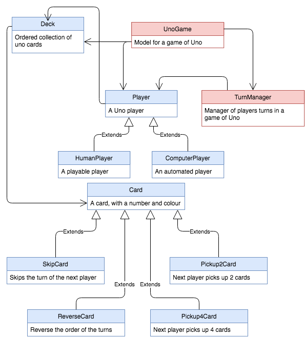

Assignment 2
CSSE1001/7030
Semester 2, 2018
Version 1.1.0
10 marks
Due Friday 21st September, 2018, 20:30
This assignment follows a programming pattern called MVC (the Model, View, Controller) pattern. You have been provided with the view and controller classes but you will be required to implement several modelling classes.
The modelling classes are from the popular card game, Uno. Each class you're required to implement has a specification that is outlined in this document. A specification is a description of each method in a class as well as their parameters and return values.
Once you have implemented the modelling classes, you will have completed a digital version of Uno that follows the MVC pattern.
Uno is a card based game consisting primarily of cards with both a colour and a number. Each player starts with a deck of seven cards. The player whose cards are visible is the starting player. Once the player makes a move by selecting their card to play, their cards will be hidden and it will move to the next players turn.
There are two piles in the middle of the board. The left pile is the pickup pile, a player should click this pile if they have no cards to play, it will add a card to their deck. The right pile is the putdown pile, a player has to pick a card from their deck which matches the card on top of the putdown pile.
The aim of the game is to have no cards left in your deck. Each turn a player can either select a card from their pile which matches the card on top of the putdown pile, or, they can pickup a new card from the pickup pile if they have no matching cards.

The type hints shown in the methods below are purely for your own understanding. Type hints do not need to be used in your assignment.
The basic type of colour and number.
Instances of Card should be initialized with Card(number, colour). The following methods must be implemented:
get_number(self): Returns the card number
get_colour(self): Returns the card colour
set_number(self, number: int): Set the number value of the card
set_colour(self, colour: a2_support.CardColour): Set the colour of the card
get_pickup_amount(self): Returns the amount of cards the next player should pickup
matches(self, card: Card): Determines if the next card to be placed on the pile matches this card.
"Matches" is defined as being able to be placed on top of this card legally.
A "match" for the base Card is a card of the same colour or number.
play(self, player: Player, game: a2_support.UnoGame): Perform a special card action. The base Card class has no special action.
Hint: Look at the a2_support.UnoGame methods
__str__(self): Returns the string representation of this card.
__repr__(self): Same as __str__(self)
For the following examples, assume that the below code has been executed:
>>> anna = ComputerPlayer("Anna Truffet")
>>> players = [anna, HumanPlayer("Henry O'Brien"), ComputerPlayer("Josh Arnold")]
>>> deck = Deck([Card(1, "red"), Card(2, "blue"), Card(3, "red"), Card(4, "green"), Card(5, "red")])
>>> game = a2_support.UnoGame(deck, players)
Each of the following classes should be a subclass of Card and should only alter methods required to implement the functionality of the card as described.
A card which skips the turn of the next player. Matches with cards of the same colour.
>>> card = SkipCard(0, "blue")
>>> game.current_player().get_name()
'Anna Truffet'
>>> card.play(anna, game)
>>> game.current_player().get_name()
"Henry O'Brien"
A card which reverses the order of turns. Matches with cards of the same colour.
>>> card = ReverseCard(0, "red")
>>> game.current_player().get_name()
'Anna Truffet'
>>> game.next_player().get_name()
"Henry O'Brien"
>>> game.next_player().get_name()
'Josh Arnold'
>>> game.next_player().get_name()
'Anna Truffet'
>>> card.play(anna, game)
>>> game.next_player().get_name()
'Josh Arnold'
>>> game.next_player().get_name()
"Henry O'Brien"
>>> game.next_player().get_name()
'Anna Truffet'
A card which makes the next player pickup two cards. Matches with cards of the same colour
>>> game.next_player().get_deck().get_cards()
[]
>>> card = Pickup2Card(0, "red")
>>> card.play(anna, game)
>>> game.next_player().get_deck().get_cards()
[Card(4, green), Card(3, red)]
A card which makes the next player pickup four cards. Matches with any card.
>>> game.next_player().get_deck().get_cards()
[]
>>> card = Pickup4Card(0, "red")
>>> card.play(anna, game)
>>> game.next_player().get_deck().get_cards()
[Card(4, green), Card(3, red), Card(2, blue), Card(1, red)]
>>> card = Card(23, "yellow")
>>> card.__str__()
'Card(23, yellow)'
>>> card
Card(23, yellow)
>>> card = Card(42, "red")
>>> card.get_number()
42
>>> card.get_colour()
'red'
>>> card.set_number(12)
>>> card.get_number()
12
>>> card.get_pickup_amount()
0
>>> special_card = Pickup2Card(0, "red")
>>> special_card.get_pickup_amount()
2
>>> special_card.matches(card)
True
>>> card.matches(special_card)
True
>>> blue_card = ReverseCard(0, "blue")
>>> special_card.matches(blue_card)
False
A collection of ordered Uno cards. A Deck should be initialized with Deck(starting_cards=None).
When no parameter is given to the constructor
(i.e. when starting_card is None) start with an empty Deck
get_cards(self): Returns a list of cards in the deck.
get_amount(self): Returns the amount of cards in a deck.
shuffle(self): Shuffle the order of the cards in the deck.
pick(self, amount: int=1): Take the first 'amount' of cards off the deck and return them.
add_card(self, card: Card): Place a card on top of the deck.
add_cards(self, cards: list<Card>): Place a list of cards on top of the deck.
top(self): Peaks at the card on top of the deck and returns it or None if the deck is empty.
>>> card = Card(42, "red")
>>> special_card = Pickup2Card(0, "red")
>>> blue_card = ReverseCard(0, "blue")
>>> cards = [card, special_card, blue_card]
>>> deck = Deck(cards)
>>> deck.get_cards()
[Card(42, red), Pickup2Card(0, red), ReverseCard(0, blue)]
>>> deck.get_amount()
3
>>> deck.top()
ReverseCard(0, blue)
>>> new_card = SkipCard(0, "green")
>>> deck.add_card(new_card)
>>> deck.add_cards([card, special_card, blue_card])
>>> deck.get_amount()
7
>>> deck.get_cards()
[Card(42, red), Pickup2Card(0, red), ReverseCard(0, blue), SkipCard(0, green), Card(42, red), Pickup2Card(0, red), ReverseCard(0, blue)]
>>> deck.pick()
[ReverseCard(0, blue)]
>>> deck.pick(amount=2)
[Pickup2Card(0, red), Card(42, red)]
>>> deck.shuffle()
>>> deck.get_cards()
[Card(42, red), Pickup2Card(0, red), SkipCard(0, green), ReverseCard(0, blue)]
A player represents one of the players in a game of uno.
The base type of player which is not meant to be initiated (i.e. an abstract class).
The Player class should be initiated with Player(name) and implement the following methods:
get_name(self): Returns the name of the player.
get_deck(self): Returns the players deck of cards.
is_playable(self): Returns True iff the players moves aren't automatic.
Raises a NotImplementedError on the base Player class.
has_won(self): Returns True iff the player has an empty deck and has therefore won.
pick_card(self, putdown_pile: Deck): Selects a card to play from the players current deck.
Raises a NotImplementedError on the base Player class.
Returns None for non-automated players or when a card cannot be played.
If a card can be found, the card should be removed.
Each of the following classes should be a subclass of Player and should only alter methods required to implement the functionality as described.
A human player that selects cards to play using the GUI.
A computer player that selects cards to play automatically.
>>> player = Player("Peter O'Shea")
>>> player.get_name()
"Peter O'Shea"
>>> player.get_deck()
<__main__.Deck object at 0x10e56cd68>
>>> player.get_deck().get_cards()
[]
>>> player.has_won()
True
>>> player.get_deck().add_card(Card(32, "red"))
>>> player.has_won()
False
>>> human = HumanPlayer("Peter Sutton")
>>> human.is_playable()
True
>>> human.pick_card(deck)
>>> print(human.pick_card(deck))
None
>>> player.is_playable()
Traceback (most recent call last):
File "", line 18, in
File "a2.py", line 323, in is_playable
raise NotImplementedError("is_playable to be implemented by subclasses")
NotImplementedError: is_playable to be implemented by subclasses
| Criteria | Mark |
|---|---|
| Functionality | 8 |
| Card classes | 3 |
| Deck class | 3 |
| Player classes | 2 |
| Style & Documentation | 2 |
| Program is well structured and readable | 0.5 |
| Variable and function names are meaningful | 0.5 |
| Entire program is documented clearly and concisely, without excessive or extraneous comments | 1 |
| Total | /10 |
As apart of this assessment, you will be required to discuss your code with a tutor. This discussion will occur in the week following your assignment submission in the practical session to which you are enrolled. You must attend this session to obtain marks for this assignment.
Your assignment must be submitted via the assignment three submission link on Blackboard.
You must submit a file, a2.py, containing your submission for this assignment.
You do not need to submit any other files.
Late submission of the assignment will not be accepted. Do not wait until the last minute to submit your assignment, as the time to upload it may make it late. Multiple submissions are allowed, so ensure that you have submitted an almost complete version of the assignment well before the submission deadline of 6pm. Your latest, on time, submission will be marked. Ensure that you submit the correct version of your assignment. In the event of exceptional circumstances, you may submit a request for an extension. See the course profile for details of how to apply for an extension.
Requests for extensions must be made no later than 48 hours prior to the submission deadline. The expectation is that with less than 48 hours before an assignment is due it should be substantially completed and submittable. Applications for extension, and any supporting documentation (e.g. medical certificate), must be submitted via my.UQ. You must retain the original documentation for a minimum period of six months to provide as verification should you be requested to do so.
Version 1.1.0 - September 17th
Task Sheet:
a2_support.py
gui.py
Version 1.0.1 - September 2nd
Task Sheet:
a2_support.py
gui.py